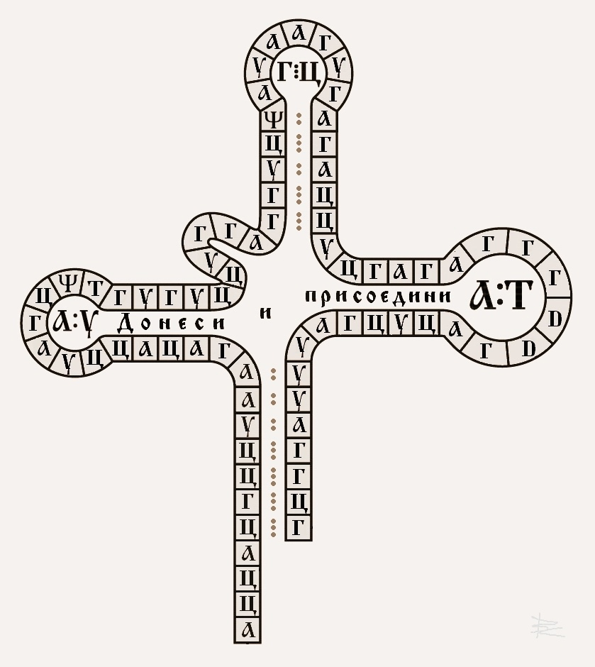
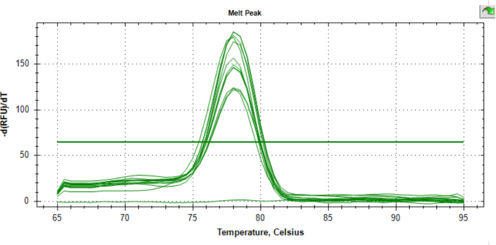
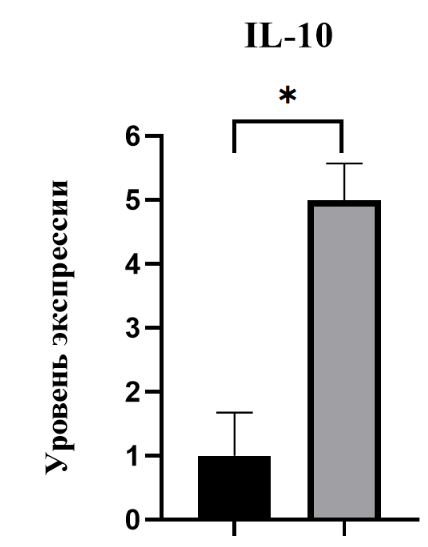
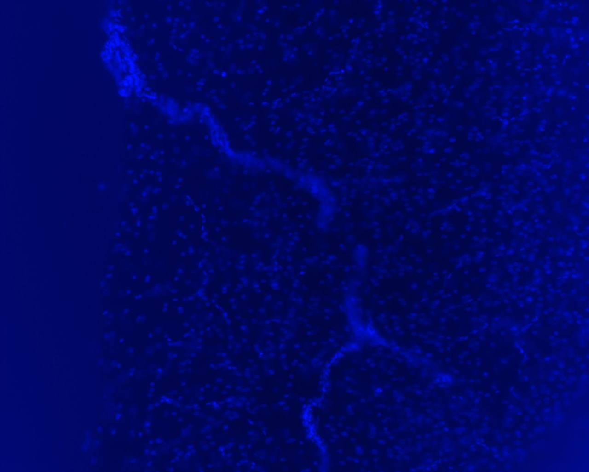
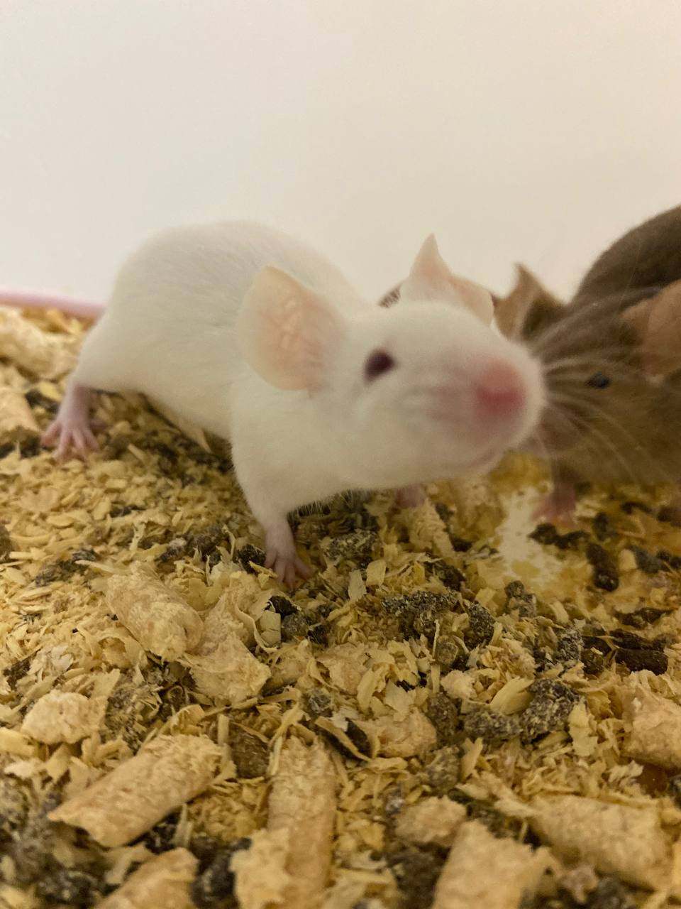

Мой любимый досуг - заниматься экспериментами.
Я состою в лаборатории синтетической биологии, где специализируюсь на молекулярной нейробиологии.
У люблю свою лабу! В последнее время я учавствую в двух проектах. В первом из них мы проверяем артефакт ПЦР. Часто при исследованиях на модельных животных - крысах, мышках - нам нужно знать точное количество выделившегося гена. Эти гены экспрессируют клетки, а кровь,содержащаяся в тканях, которую мы берем, как мы предполагаем, меняет конечный результат.
Второй эксперимент, мой предполагаемый диплом, затрагивает тему работы ароматазы. Это белок, который из мужских андрогенов делает эстрогены. Недавно стало известно, что высокое содержание эстрогена позволяет мозгу лучше восстанавливаться после повреждений и воспалений
Что интересуного я могу показать - так это красивую мышь, удачную ПЦР или удавшийся иммуногистохимический анализ.
И молитву...
Я люблю свою работу, я приду сюда в субботу, и, конечно, в воскресенье, здесь я встречу день рождения...HELP
Красивые кривые плавления говорят о том, что ПЦР прошла успешно. В такой чудесный день хочется жить чуть больше, чем обычно, а все трудности оказываются преодолимыми.
Статистическая обработка показала, что разница экспрессии противовоспалительного цитокина отличается у перфузированных и неперфузированных мышек
Срез могза птицы (чижика с Куршской косы), окрашенный хестом. Ярко-голубым цветом подсвечены ядра клеток. Эти птички были заражены малярией. Это некоторая модель воспаления, которая расскажет нам чуть больше о том, действительно ли спецефическая экспрессия ароматазы защищает организм от страшных последствий.
Лабораторная нелинейная мышь, милая самочка. Самки мышек очень послушные и приятные. А вот самцы постоянно дерутся, грызут друг друга до смерти.